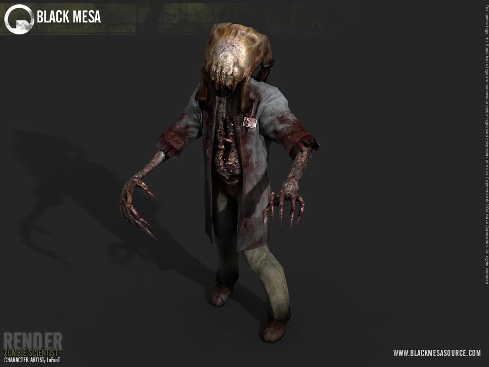
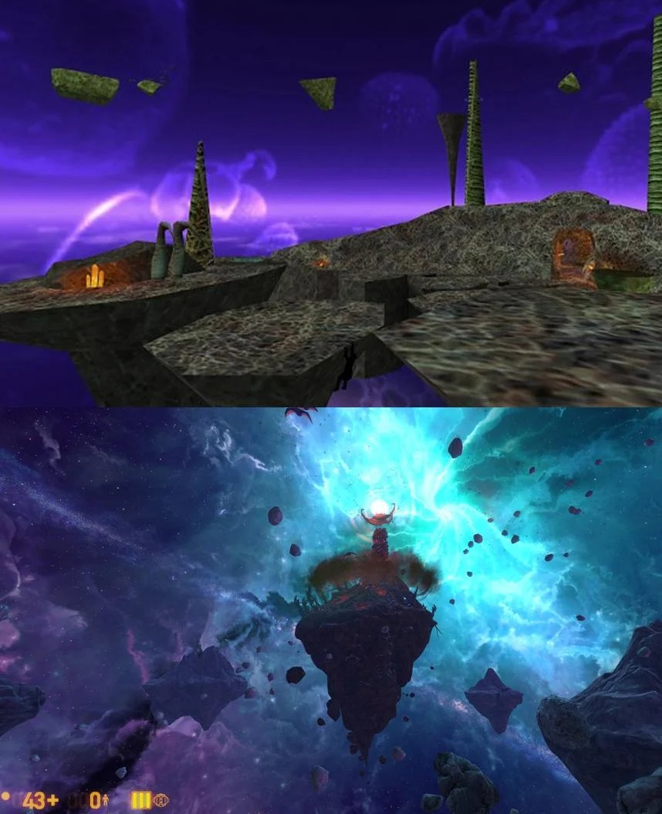
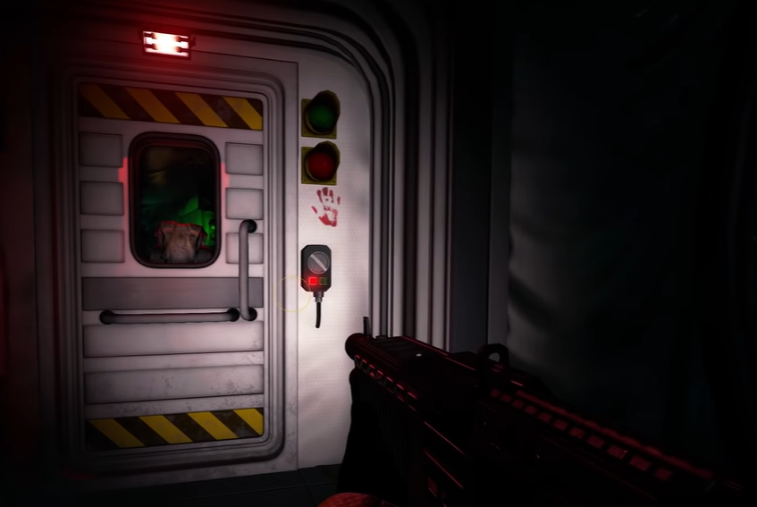
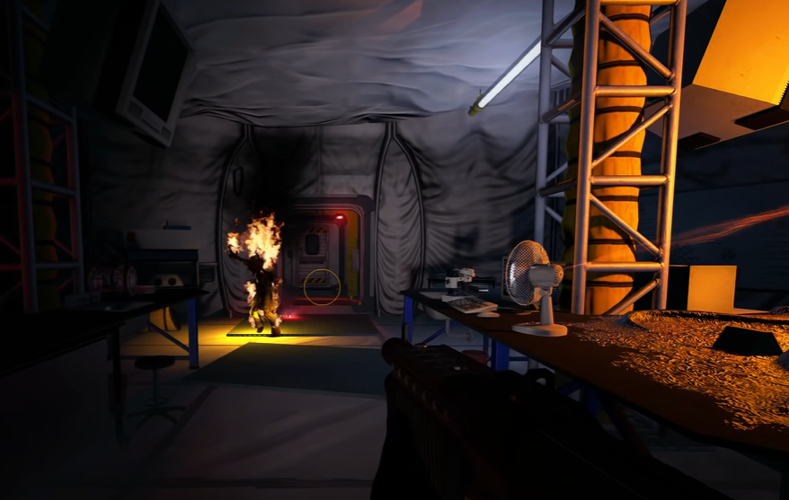

How Black Mesa Makes Us Feel
Mar 6, 2023Background Information
Black Mesa if you didn’t know was a remake of the original Half-Life which was a very critically acclaimed first person shooter and puzzle game for its time with it being a step forward with graphics, puzzles, and gameplay. (A first person shooter means that you take the first person perspective meaning you see from the player character's eyes.)
With adapting a classic game it could be easy to make mistakes but Black Mesa surpasses the expectations with improvements in some of the level design compared to Half-Life. This leads into how Black Mesa with its art direction, animation, and weapon designs is able to invoke feelings of powerlessness, powerfulness, awe, and horror.

Teleportation experiment gone wrong screenshot! From Den of Geek.
It Makes You Feel Powerless
For how the art and animation makes one feel powerless and powerful it relates to the progression of weapon choice and design in Black Mesa. When you play as the character Gordan Freeman, a scientist at a research facility in New Mexico, you are thrust into the action once a teleportation experiment goes wrong. The visual effects and screen shake along with the whirring sounds show how the teleporter has gone wrong and how you can not do anything to stop it as it inevitably explodes.
Afterwards the first weapons that you do have access to include flares and a crowbar as you gauge your distance from Headcrabs and Headcrab Zombies. The design of these enemies are grotesque but deadly and make one feel powerless as the idea of facing off more than 5 of them with the weak but quickly animated moving crowbar.
Headcrab Zombie pictured above from Slender Fortress Wiki.
How Progression in Weapons Affect You
Things change however once you are able to get your first ranged weapon the Glock and once you get stronger and stronger weapons. It makes you start to feel like you have more control over the situation of alien takeover. One of the more notable weapon designs later in the game is the Gluon Gun which fires a powerful energy beam that burns through walls and enemies.
It is powered by energy that it then uses to vaporize enemies that look like they fall apart into pieces of aflame blue paper. With this animation, along with literal RPGs(Rocket-Propelled Grenade) and random Heavy Machine Guns set across the game to destroy helicopter /tank set pieces, you begin to feel in control and powerful.
Comparison between Xen from the original Half-Life game with Xen from Black Mesa from Reddit.
The Awe of Another World
Besides feelings of powerlessness and powerfulness, Black Mesa, depending on the moment, is able to invoke other feelings such as awe. For example, once Freeman takes the teleporter to Xen or the borderworld one is opened up to a whole new world built of asteroids with vibrant ecosystems and creatures living amongst them. The sight is one to behold as before this alien section of the game, one was mainly in sterile, cold, or disgusting environments depicted with office spaces, sanitized research facilities, uniform military occupations, or a literal sewage system (Black Mesa).
Xen is colorful, filled with purple, blue, green and red hues with glowing jelly in the sky which also happens to be a galaxy full of stars. This was a much major improvement to the original Half-Life as it had instead been “a bunch of floating rocks” with “awkward” parkour(“Black Mesa vs Half Life | Direct Comparison”4:48). This is not even mentioning the plants and animals with unique and creative designs(despite them being pretty deadly) which all instill one with awe and amazement.
The Horror Of Darkness
The other side of that coin comes with feelings of horror in Black Mesa. One teensy tiny section of the game specifically that is very much worth mentioning is after one visits Xen. You try to progress through several tight cramped rooms with minimal lighting except for red and white light flashing from what appears to be a temporary research station built by now dead scientists (Black Mesa). The lighting in this section is particularly amazing as you fear what lies in the shadows that could jump out at you any second. It turns a small confrontation with a beginner level Headcrab Zombie into a tense feeling of dread that it is not the only creature lying in the dark.
 My Own Images from my own Gameplay Are shown Above.
Graphics Improvements are Beneficial
Besides just the emotions aspects of this, the graphics was also overhauled by the Black Mesa Crowbar Collective team which adds to the overall atmosphere and realism of the game. “The original game’s lighting hasn’t aged remarkably well” which prompted the Black Mesa team to try new things (“Black Mesa vs Half Life | Direct Comparison” 5:38). Some scenes for instance “were brightly lit and plain” when it would’ve been better for it to be darker to fit some scenes where it should have been “dark and moody” (5:40). With this in mind, it makes sense that the graphical improvements not only helped just to make the game look more modern but also made it more realistic and immersive for the player to get invested with the atmosphere.
Closing Thoughts
For the reasons of improvements in graphics and art, animation, and designs, Black Mesa ends up being an improvement and modern take on the original Half-Life game while also causing all sorts of different emotions within its runtime. It can go to show that a remake for instance can be useful as one can expand on ideas not fully showcased in the original or it can be used to revisit an old game with a modern feel.
“Black Mesa vs Half Life | Direct Comparison” YouTube, uploaded by Nick930, 12 December 2019, https: //www.youtube.com/watch?v =m0pbkebm2nM&ab_channel =Nick930.
Black Mesa. Windows PC version, Crobar Collective, Black Mesa Modification Team, 5 May 2015.